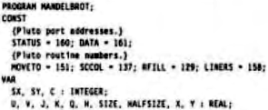

Scorpio News |
October–December 1987 – Volume 1. Issue 4. |
| Page 26 of 55 |
|---|
Those of you who are horrified by the appearance of a BASIC program in an article by me have not fully understood my “horses for courses” policy.
The program chooses one of the logical display colours at random, and then sets it to a random colour from the possible 4096 colours available with the mini palette. The result is very pleasing, if you like that sort of thing. With a good picture to work on, it makes most disco lights look rather ordinary. I hate discos, so the may be a biased judgement.
The program is not in its original form, as when I set the colour levels to INT(RND(1)*15), as the Pluto manual suggested, only very dim colours appeared. In fact, the board uses the numbers 0, 15, 31, 47 etc., rather than 0, 1, 2, 3… as stated in the manual. I hope this information comes in time for whoever bought mini palettes in the Scorpio sale. If the board only produces black and a very dim selection of colours, try the above change of parameters.
Other commands available on the mimNI palette include initialising the colour look up table to a grey scale, reading and writing colour look up tables, changing which table is in use (there are two) and a blink routine with variable speeds.
I actually dithered too long before trying to buy the full palette board in the great sale, which is an annoying thing to have happen when one has made up one’s mind to spend. There was only one of those boards in the sale, and some lucky devil bought it and saved a fortune. I hope it is working, honest!
I have not managed to do an enormous amount of work with the improved board, as once again the Open University is keeping me very busy, but various programs in BASIC to vary the colours in more organised ways have convinced me that the Pluto is well worth the time spent on the upgrade.
Well, obviously, you write programs to produce displays of the Mandelbrot set, as these are very pretty, and will be recognised by anyone who has seen them a magazines, on the television, and on the screen of the new pocket Cray.
Not many people know what the Mandelbrot set is, so I thought I would try to tell you. Experts, skip to a later section. The idea is simple enough. You choose point (x,y) in what is known as the complex plane. That is, the x co-ordinate is a real number, and the y co-ordinate is so-called “imaginary” number, in fact a multiple of the square root of -1.
Then, you carry out transformation of the coordinates, as described by Benoit Mandelbrot, over and over until one of two things happens. Either the co-ordinates increase rapidly, and the point moves off to inifinity, or it stays inside a distance of two units from the point (0,0). Actually, the point can do two and a bit things, and the bit is where the interest is. Some points take quite a while before they zoom of, while others soon go.
If a colour is chosen on the basis of how long the point stays, a pretty display results. This usually has its central area coloured black, representing points that are definitely in the Mandelbrot set, with a range of colours heading out toward the circle of radius two that has been shown to surround all the points it he set. The length of the line round all points in the set, but excluding all other points, is infinite. Honest!
You would be disappointed if I wrote all that, and the didn’t give you a program to do plots of the pictures, so here is one. It is written in Hisoft Pascal, version HP-5, which uses my Belectra HSA-88B board to speed up the calculation. This Pascal only likes upper case, which explains why the program is shouting you.
| Page 26 of 55 |
|---|